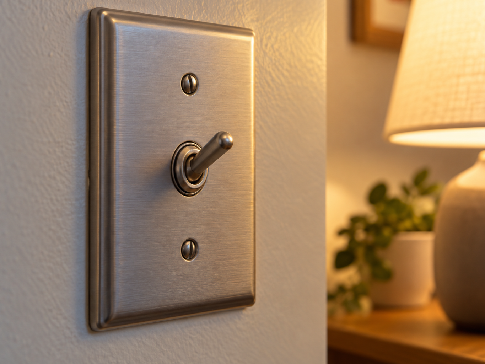
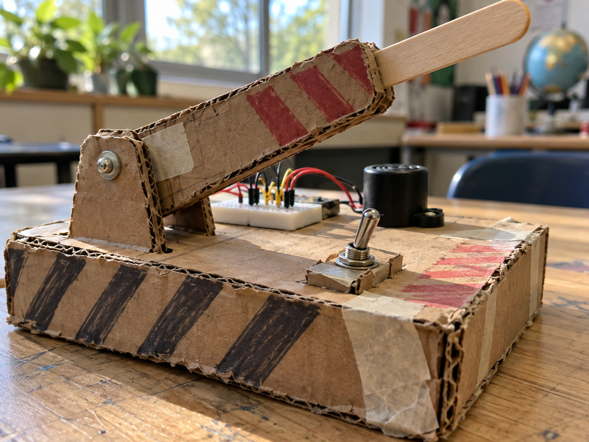

Wall light switch
DetectRead the switch position
DecideCircuit open or closed
DoSwitch the room light
A toggle switch stays in the position you move it to, unlike a push button.
Its centre COM leg connects to one outside leg in each position.
It is useful when a project needs a lasting on/off choice or two modes.


from gpiozero import Button
mode = Button(23)
mode_two = mode.is_pressedfrom picozero import Switch
mode = Switch(16)
mode_two = mode.is_closed